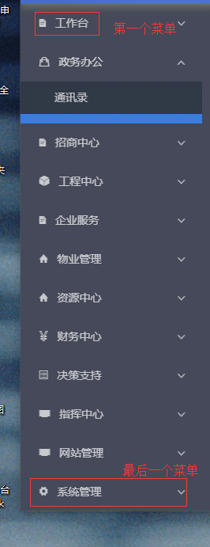

目录
- 1.阻止事件点击
- 2.v-bind:src时图片加载问题
- 3.props传值问题
- 4. .native原生事件
- 5. vue-router 懒加载
- 6. vue项目里使用阿里的 iconfont
- 7. vue 父组件调用子组件方法并接收参数 $emit
- 8. vue watch 监听(父子组件在同一个页面里,数据变化时组件没有重新渲染情况下可用)
- 9. vue mixins
- 10. iview form表单验证number类型
- 11. iview menu菜单栏修改时遇到的问题
- 12. vue 附件上传
- 13. 自己写的toast组件
- 14. vue 防止跳转到不存在的页面
- 15. iview form表单时间验证,类型不同会报错
1.阻止事件点击
例子：
这里的click.stop即可阻止事件执行。
2.v-bind:src时图片加载问题
js
一开始百思不得其解为什么:src动态加载不了图片呢,关键还没有报错,后来在知乎看到了答案,需要加require。这个跟webpack有关,需要详细了解下。网上有人解释道：图片的动态引入需要当做一个模块来进行打包 不然webpack会默认为字符串的。
3.props传值问题
直接看示例：
https://github.com/lizhongzhen11/myStudy/blob/master/vue/props.vue
https://github.com/lizhongzhen11/myStudy/blob/master/vue/components/childProps.vue
4. .native原生事件
https://segmentfault.com/q/1010000007896386/a-1020000007896602
最近开发后台管理系统项目,环境是苍老师搭的。抽空看了下苍老师搭的环境配置,发现他写的路由和通过vue-cli构建后默认的路由不一样！
首先,他在router文件夹下有两个js,一个是默认的index.js,还有一个是他定义的router.js,以前没大注意,在他的环境中路由都是写在router.js里面的,但是一个经过vue-cli构建的项目,默认路由是下面这种写法：
但是,苍老师搭建的环境不是这样写的。苍老师环境中的index.js：
router.js:
他主要用到了路由懒加载,看https://router.vuejs.org/zh-cn/advanced/lazy-loading.html 。为什么采用这种方式呢？
当采用默认的路由方式,那么组件会先全部在
index.js头部import进来才会去加载,页面少就算了,如果页面多,那么加载速度明显会变慢；而采用懒加载方式,当跳转到某页面时才会去加载它对应的组件,这样会大大提高加载速度。
在开发过程中需要用到iconfont,由于在上一个项目中用到过,所以有点印象。但是！！！那个项目的环境全是苍老师配置的,这个项目我想自己配置锻炼下,结果就悲催了。
一开始,进展很顺利,看 https://www.cnblogs.com/chinabin1993/p/8184296.html 即可。可惜,当走到最后一步import ./iconfont/iconfont.css时,报错了,说找不到./iconfont/iconfont.svg?t=1524893607035 in...？？？那个链接上也有展示,不过他说把css-loader装一下就好了。不过我是用的vue-cli搭建的,这个css-loader貌似一开始就装好了。这样我就很郁闷了！！！
我百度了起码2小时,愣是找不到原因,后来索性重新把下载下来的iconfont文件全部再拷贝进去,成功了！！！卧槽他大爷！！！为什么？因为我一开始是一个文件一个文件的拷贝进去的,我当时想某些文件可能没用,但是拷贝途中有可能遗漏了某个文件,操蛋啊,自作孽啊。。。
7. vue 父组件调用子组件方法并接收参数 $emit
回到目录
直接看示例：
|
|
父组件html
子组件
子组件html
8. vue watch 监听(父子组件在同一个页面里,数据变化时组件没有重新渲染情况下可用)
回到目录
开发列表页和列表详情页时,由于老板要求这两个页面写在一个路由里,这样可以减少路由切换,所以采用了iview框架里的Tabs组件,该组件其实是利用css进行切换的,所以没有涉及到组件的重新挂载。
当我用props进行父子组件传参时,发现当父组件数据改变后,子组件数据没有任何变化！我习惯性的在mounted()里面打印,但是如果组件没有重新挂载过,那么mounted()只在初始化渲染时有用！！！所以这时候在mounted()里面无论如何也无法得到父组件改变后传过来的数据了！！！
看例子,父组件：
父组件js:
子组件js:
项目中有多个相似的页面及操作方法,所以可以使用mixins简化开发。但是在使用中没有仔细阅读文档,踩了个小坑。mixins有点类似java中的覆盖。如果组件中存在与mixins同名的属性或方法,那么会使用组件中定义的属性和方法覆盖mixins里面定义的。
https://cn.vuejs.org/v2/guide/mixins.html
10. iview form表单验证number类型
回到目录
看 https://segmentfault.com/q/1010000010333755?sort=created
在后期测试发现,如果将number类型的验证按照上述分成两步来写,那么刚进入页面时即使该输入框内有默认值0,还是会报红,后来发现将验证规则合在一起写不会有这个问题,但是,把默认值删了,直接传空的话就会有新问题了,因为Number('') === 0,可以改用parseFloat(),如下：
其实iview的菜单栏挺不错的,但是老板要求当屏幕缩放时,所有菜单都能显示,除非浏览器高度小于所有菜单高度,否则的话必须全部显示！语言表述可能不大准确,上图：

就是要做成如上图的样子。可以看到,当浏览器缩放到一定程度时,政务办公下面的子菜单只显露了一个通讯录,其实这样是不大美观的,奈何老板需求这样,那么只能做了。
一开始还好,给子菜单里加了overflow-y: auto;,然后在 https://www.lyblog.net/detail/314.html 找到了修改进度条样式的方法(有兼容性),接下来利用浏览器显示高度 - 父菜单总高度(这个是固定不变的) = 子菜单所在块高度,然后找到子菜单所在块改style.height不是很完美吗？
可惜,想的太好,iview封装过的Menu组件很好,但是我也无法直接去操作子菜单所在的块,只能通过ref以及name等通过数组下标的形式慢慢找到对应的ul,没错,是一个拥有.ivu-menuclass的ul,虽然写的不优雅,但起码取到了啊,这时候配合window.onresize()完美完成需求。心里暗自高兴,结果,很快发现bug了。
页面刚加载以及点击切换时不起作用！！！我在mounted()里面调用了该方法,同时也在iview提供的监听菜单展开关闭的方法中调用了改变ul.ivu-menu高度的方法,但是,不起作用！！！
纠结了很长时间,用过this.$nextTick()以及在其内部调用setTimeout都没作用,一气之下看iview的源码,在https://github.com/iview/iview/blob/2.0/src/components/menu/submenu.vue里：
如上所示,第一个li代表每个父菜单,父菜单内部包含一个div与一个ul标签(),div用来放父菜单标题,关键在于ul标签,iview内提供的MenuItem就是插在这个ul标签内的。现在,我想改的就是ul的样式,不过很抱歉,它没给我提供api。。。
在仔细观察源码后依然无法解决,遂问了苍老师,苍老师说加个setTimeout看看,我心想我用过啊,结果直接在mounted()里加果然有效果,不需要在this.$nextTick()里面加,但是由于我写得渣,采取的是直接style.height形式,一上来连过渡效果都没有,很糙,本想着加个过渡效果,发现依然没用。
最后,只好把MenuItem组件注释掉,自己用ul li重写,当然写在MenuItem位置,这样iview里面的Menu以及Submenu组件还有name属性等就可以直接用了。
我改写的,
12. vue 附件上传
回到目录
自己的： https://github.com/lizhongzhen11/myStudy/blob/master/vue/upload.vue
iview的： https://github.com/iview/iview/blob/2.0/src/components/upload/upload.vue
13. 自己写的toast组件
回到目录
github: https://github.com/lizhongzhen11/myStudy/tree/master/vue/components/Toast
vue虽然用了一段时间了,但是还没有写过真正意义上通用的组件,之前写得大多是半吊子刚好业务能用罢了。但是在九龙湖项目中发现苍老师对所有调接口报错进行了处理,当调接口报错时他会返回给前台一个空对象,然后利用toast弹出来,不会出现以前那种整个页面都是后台报错信息的情况,美观了不少,于是,我就好奇的去看看他怎么实现的。
拦截很简单,利用了axios的interceptors属性,但是,却让我歪打正着看到了他自己写的拦截报错后弹框显示报错信息的toast组件,由于和iview的有点相似,一开始我都没在意过,这次看到了大吃一惊,居然是自己写的,看了他的代码,我居然不会这样写。
这样肯定不行的,所以我自己也尝试去写了下,当然不懂得还是看他的代码了。主要是const ToastConstructor = vue.extend(Toast)这一步创建构造函数,我竟然不知道！！！其实 https://cn.vuejs.org/v2/api/#Vue-extend 官方示例很明显的提出了创建构造器,我竟然没仔细看,以前都是当java的extend来用的。。。
还有document.body.appendChild(newToast.$el)这一步需要将刚刚实例化的newToast添加到body上,不然怎么刷新页面也看不到的！！！
在做自己搭建的项目中偶然发现,浏览器中输入不存在的路由也可以跳转,只不过页面是空的,立即意识到这是个bug需要解决,好在网上已经有了答案,这个答案在刚接触vue时我还看过,只是没能实践过,很简单的：
这时,我突然想到九龙湖项目里也有用到过,但是我没在意过,现在回去头去看,果然用到了,还顺带加上了iView.LoadingBar.start()这段代码,这个一看就知道是iview的组件方法,其实就是页面加载进度条,官方也给出了示例。不过九龙湖里还打算在页面跳转中做权限验证,但是目前还没开发完毕。
15. iview form表单时间验证,类型不同会报错
回到目录
开发九龙湖项目时,发现后台一开始传过来的是new Date()类型,而页面上需要展示yyyy-MM-dd HH:mm:ss,所以所性后台直接做了转换,传给前台需要的格式。但是利用iview的form表单验证发现了问题,第一次修改保存是ok的,但是第二次修改同一条数据,发现控制台报value.getTime is not a function,这就很奇怪了,后来不断console.log()发现第一次输出是new Date()类型,但是第二次输出是yyyy-MM-dd HH:mm:ss的字符串类型,两次类型不一致了,解决方法就是保持类型一致。
可以看：https://segmentfault.com/q/1010000012129675
以及：https://github.com/ElemeFE/element/issues/8020